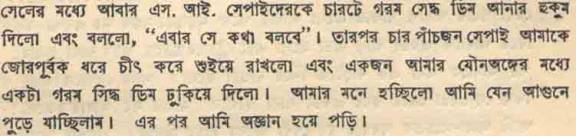
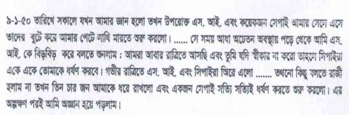

<html>

<head>
<meta http-equiv="Content-Type" content="text/html; charset=windows-1252">
<meta name="GENERATOR" content="Microsoft FrontPage 4.0">
<meta name="ProgId" content="FrontPage.Editor.Document">
<title>Ila Mitra - A Tribute</title>
</head>

 

 <body background="../../mukto_thinker_wm1.jpg" bgproperties="fixed">

<blockquote>
  <p class="MsoBodyText" align="center"><font color="#000080"><b style="mso-bidi-font-weight: normal"><font size="5">&nbsp;</font></b></font></p>
  <div align="center">
    <center>
                            <TABLE ID="NavigationBar2" BORDER=0 CELLSPACING=1 WIDTH=606 height="1">
                                <TR VALIGN=TOP ALIGN=LEFT>
                                    <TD WIDTH=101 height="1" align="center">
                                    <A HREF="../../index.html"><font size="2">
                                    </font></A></TD>
                                    <TD WIDTH=101 height="1" align="center">
                                    <A HREF="../../Articles/articles.html"><font size="2">
                                    </font></A></TD>
                                    <TD WIDTH=101 height="1" align="center">
                                    <A HREF="../../Recent_Debate/recent_debate.html"><font size="2">
                                    </font></A></TD>
                                    <TD WIDTH=101 height="1" align="center">
                                    <A HREF="../../Special_Event_/special_event_.html"><font size="2">
                                    </font></A></TD>
                                    <TD WIDTH=101 height="1" align="center">
                                    <A HREF="../../Moderators/moderators.html"><font size="2">
                                    </font></A></TD>
                                    <TD WIDTH=101 HEIGHT=1 align="center">
                                    <A HREF="../../Forum/forum.html"><font size="2">
                                    </font></A></TD>
                                </TR>
                                <TR VALIGN=TOP ALIGN=LEFT>
                                    <TD WIDTH=101 align="center" bgcolor="#BFD8D9" height="6">
                                      <p align="left"><font size="2" color="#FFFFFF">&nbsp;<a href="../../women/index.html"><b>Women</b></a></font></TD>
                                    <TD WIDTH=202 bgcolor="#BFD8D9" align="center" colspan="2" height="6"><font size="2" color="#FFFFFF">
                                    <a href="../../human_rights/index.html"><b>Human
                                      Rights violation</b></a></font></TD>
                                    <TD WIDTH=202 bgcolor="#BFD8D9" align="center" colspan="2" height="6"><font size="2" color="#FFFFFF">
                                    <a href="../index.html"><b>Great
                                      Personalities&nbsp;</b></a></font></TD>
                                    <TD WIDTH=101 HEIGHT=6 align="center" bgcolor="#BFD8D9">
                                      <p align="left"><font size="2" color="#FFFFFF">&nbsp;<a href="../../humour/index.html"><b>Humor</b></a></font></TD>
                                </TR>
                            </TABLE>
    </center>
  </div>
  <div align="center">
    <table cellSpacing="0" cellPadding="0" width="600" border="0">
      <tbody>
        <tr>
          <td colSpan="2" rowSpan="3"></td>
          <td class="k" bgColor="#6fb1d9"></td>
          <td align="right" colSpan="2" rowSpan="3"></td>
        </tr>
        <tr>
          <td class="h" bgColor="#eef5fa" height="22">
            <p align="center">&nbsp;</p>
          </td>
        </tr>
        <tr>
          <td class="k" width="1" bgColor="#6fb1d9"></td>
        </tr>
        <tr>
          <td class="k" width="1" bgColor="#6fb1d9"></td>
          <td width="18" bgColor="white"></td>
          <td bgColor="#FFFFFF">
  <h1 style="TEXT-ALIGN: center" align="center"><b><font size="5" color="#000080" face="Times New Roman">Comrade
  Ila Mitra: A tribute [Part II]</font></b></h1>
  <h1 style="TEXT-ALIGN: center" align="center"><b><font size="5" face="Times New Roman" color="#000080"><o:p>
  - Ajoy Roy</o:p>
  </font></b></h1>
  <font face="Arial" size="2">
  <p class="MsoNormal"><font color="#000080">&nbsp;<o:p>
  </o:p>
  </font></p>
  </font>
  <h6><font color="#000080"><span style="font-size: 14pt; mso-bidi-font-size: 10.0pt; background-color: #EEF5FA"><b><font size="4" face="Arial">Torture
  on Ila Mitra </font></b></span></font>
  <font face="Arial" size="2">
  <font color="#000080"><u><o:p>
  </o:p>
  </u></font></h6>
  <p class="MsoNormal" align="justify"><font color="#000080">As we told in our
  last posting that Ila Mitra with some of her close comrades and hundreds of
  her Saontal followers was arrested at Rohanpur Railway station. She was
  brought to Nachol police station on the next day, 08. 01. 50. From 8 – 10<sup>th</sup>
  January she was not only inhumanly treated but was exposed to all kinds of
  brutal torture committed by the Sub Inspector of Nachol with his sepoy
  accomplices. The process and methods of repression and torture are beastly and
  totally devoid of any human values and touch. She was treated like worse than
  an animal. To what limit police excess could reach - torture carried on
  comrade Ila Mitra could be cited for all time. It is a glaring example how a
  civilized government use its sate machinery to the extreme brutality to
  torture its own citizen in the name of extracting confession. The treatment
  and torture she had received at the hands of police under the leadership of
  S.I. of Nachol had no parallel yet in the history of Pakistani repression on
  accused. The vivid picture of those tortures she received from the government
  of the Islamic State of Pakistan was given by her at the Rajshahi Court. The
  form and kind of torture had no limit- it exceeds all imagination. I cite a
  few below as examples.</font></p>
  <p class="MsoNormal"><font color="#000080">&nbsp;<o:p>
  </o:p>
  </font></p>
  <ul style="MARGIN-TOP: 0in" type="disc">
    <li class="MsoNormal" style="mso-list: l5 level1 lfo14; tab-stops: list .5in"><font color="#000080">Physical
      torture – beating , pressing hands &amp; legs in between two bamboo
      sticks<span style="mso-spacerun: yes">&nbsp;</span></font>
    <li class="MsoNormal" style="mso-list: l5 level1 lfo14; tab-stops: list .5in"><font color="#000080">Beating
      on heads with rifle butt and kicking delicate parts of the body with boots
      on</font>
    <li class="MsoNormal" style="mso-list: l5 level1 lfo14; tab-stops: list .5in"><font color="#000080">Stripping
      of cloth followed by beating on naked body</font>
    <li class="MsoNormal" style="mso-list: l5 level1 lfo14; tab-stops: list .5in"><font color="#000080">Starvation</font>
    <li class="MsoNormal" style="mso-list: l5 level1 lfo14; tab-stops: list .5in"><font color="#000080">Even
      drinking water denied</font>
    <li class="MsoNormal" style="mso-list: l5 level1 lfo14; tab-stops: list .5in"><font color="#000080">Solitary
      confinement within a cell</font>
    <li class="MsoNormal" style="mso-list: l5 level1 lfo14; tab-stops: list .5in"><font color="#000080">Piercing
      iron nails through heels</font>
    <li class="MsoNormal" style="mso-list: l5 level1 lfo14; tab-stops: list .5in"><font color="#000080">Pushing
      foreign body in her private parts</font>
    <li class="MsoNormal" style="mso-list: l5 level1 lfo14; tab-stops: list .5in"><font color="#000080">Raping</font>
    <li class="MsoNormal" style="mso-list: l5 level1 lfo14; tab-stops: list .5in"><font color="#000080">Insulting
      remarks</font></li>
  </ul>
  <p class="MsoBodyText2"><font color="#000080">Comrade Mitra had gone through
  mental agony, pain and physical strains in Nachol police station for three
  days.</font></p>
  <p class="MsoBodyText2" align="justify"><font color="#000080">&nbsp;&nbsp;&nbsp;
  On 10<sup>th</sup> January ’50 she was brought to Nawabganj in almost semi
  unconscious sate with high fever and bleeding condition. At the Nawabganj
  police jail gate the sepoys received her with blows on her forehead. She
  however here received much better treatment compared what happened at Nacho.
  She got medical treatment and finally was transferred to Nawabganj Govt.
  hospital on 12<sup>. </sup>01. 50 as is evident from her jabanbandi
  (statement). The OC of Nawabganj Ps, happened to know Ila Mitra at Calcutta.
  He treated her well and looked after her so that no such brutal oppression was
  repeated here. Ila Mitra later on remembered his kind behavior with gratitude.
  She later on recalled : “ the OC of that police station Mr. Raham knew me.
  When I was studying at Bethune he was a student of Scottish Church College. My
  fever at that ran very high. Blood was streaming out from my whole body. Under
  such condition I was left alone in a cell. OC Mr. Rahman used come at night
  unnoticed and used to pour water on my head and freshened me up; he also feed
  me with fruits. I shall never forget his greatness. I was there at Nawabganj
  for 7 days. Every night throughout seven days he nursed me with care and love
  and gave medicine. Otherwise I would have died there. Many came inside the
  cell to beat me up, but he sternly resisted all saying that she was under
  trial and no one should raise any hand on her.” The attending doctor Mr.
  Ayub Ali was also very sympathetic to her. Even then on 16<sup>th</sup>
  January she was forcibly take to a house to sing a blank paper under threat
  and physical torture.</font></p>
  <p class="MsoBodyText2"><font color="#000080">&nbsp;<o:p>
  </o:p>
  </font></p>
  </font>
  <h6><font color="#000080"><span style="font-size: 14pt; mso-bidi-font-size: 10.0pt; background-color: #EEF5FA"><b><font size="4" face="Arial">Communal
  tension: hunger strike of the security prisoners</font></b></span></font><font face="Arial" size="2"><font color="#000080"><span style="font-size: 14pt; mso-bidi-font-size: 10.0pt"><o:p>
  </o:p>
  </span></font></h6>
  <p class="MsoBodyText2" align="justify"><font color="#000080"><span style="font-size: 14pt; mso-bidi-font-size: 10.0pt">&nbsp;&nbsp;&nbsp;&nbsp;
  </span>As the condition of comrade Mitra continued to deteriorate she was
  brought to Rajshahi Central jail in a very poor state of health on 21. 01. 50
  and was directly admitted to Rajshahi Central Jail Hospital. The matter did
  not end there the attempt was being made at the instance of ML government to
  colour the Nachol rebellion as Hindu-Muslim conflict in which the Hindus and
  Saontals deliberately killed the Muslims including A.S.I of Nachol. The widow
  of the deceased was brought to Rajshahi jail gate by the interested quarters
  that used to narrate a false and concocted story about Nachol killing. She
  tried to excite the common prisoners and sepoys that her husband was killed by
  the Hindus and Saontals. So they must take revenge against the Hindu prisoners
  particularly those who were accused of Nachol episode. The jailor Mannan
  played a significant role in this matter. Often he used to bring Ila Mitra
  from jail hospital at the gate almost in a half naked condition showing her to
  the prisoners “ Look at your Rani Ma. She even became a queen. “ This
  created a tense communal situation inside Rajshahi jail among the prisoners.
  For this reason the Hindu security prisoners dared not to come out of their
  wards during those days.</font></p>
  <p class="MsoBodyText2" align="justify"><font color="#000080">&nbsp;&nbsp;&nbsp;&nbsp;
  Seeing no alternatives the security prisoners submitted a memorandum to the
  chief minister Nurul Amin giving him a 15 days ultimatum to ease communal
  tension in side the jail- otherwise they would go for hunger strike to redress
  the situation. As nothing was heard from the chief minister the security
  prisoners resort to hunger strike from 2<sup>nd</sup> February ’50. On the
  ninth day ( 10<sup>th</sup><span style="mso-spacerun: yes">&nbsp; </span>February)
  the district magistrate came to see the conditions of hunger strikers and
  assured them that the administration was taking appropriate steps to ease the
  tension and bring back normalcy. Since the wife of the deceased ASI stopped
  coming at the jail gate and jailor Manna was cautioned for his communal
  utterances.<span style="mso-spacerun: yes">&nbsp;&nbsp;&nbsp;&nbsp;&nbsp;&nbsp;&nbsp;&nbsp;&nbsp;&nbsp;&nbsp;&nbsp;&nbsp;&nbsp;&nbsp;&nbsp;&nbsp;&nbsp;&nbsp;&nbsp;</span></font></p>
  <p class="MsoBodyText2"><font color="#000080">&nbsp;<o:p>
  </o:p>
  </font></p>
  </font>
  <h6><font color="#000080"><span style="font-size: 14pt; mso-bidi-font-size: 10.0pt; background-color: #EEF5FA"><b><font size="4" face="Arial">Famous
  Jail Killing at Khapra Ward</font></b></span></font><font face="Arial" size="2"><font color="#000080"><span style="font-size: 14pt; mso-bidi-font-size: 10.0pt"><o:p>
  </o:p>
  </span></font></h6>
  <p class="MsoBodyText2" align="justify"><font color="#000080">&nbsp;&nbsp;&nbsp;&nbsp;
  After some time Ila Mitra was brought to Rajshahi central jail from the
  hospital in a relatively slight better condition. She was put in a small cell
  in a sick condition. The security prisoners already came to know about her and
  Nachol rebellion. Ila Mitra also came to know the conditions of the security
  prisoners and common prisoners for the better of which the prisoners were
  making demands. These demands of the general prisoners for improvement of
  their diet and supported by the security prisoners, who began a hunger strike
  on 5<sup>th</sup> April ’50 in support of the common prisoners’ demands.
  This ultimately led to the history-famous jail killing in Khapra Ward on 24<sup>th</sup>
  April. The sepoys opened fire when the jail superintendent Mr. Bill
  accompanied by the jailor and two deputy jailors came to visit the jail. On
  the day seven security prisoners, Hanif Shaikh, Sukhen Bahattacharya, Delwar,
  Sudhin Dhar, Bijan Sen, Kamparam Singha, and Anwar Hosain died on the spot.
  There were 31 security prisoners in all out of which seven met death and many
  others received serious injuries including Mansur Habib, Nurunnabi Choudhury,
  Abdul Haque, Amulya Lahiri, Babar Ali and Abdus Shahid.<span style="mso-spacerun: yes">&nbsp;&nbsp;&nbsp;</span></font></p>
  <p class="MsoBodyText2"><font color="#000080">&nbsp;<o:p>
  </o:p>
  </font></p>
  </font>
  <h6><font color="#000080"><span style="font-size: 14pt; mso-bidi-font-size: 10.0pt; background-color: #EEF5FA"><b><font size="4" face="Arial">Nachol
  Case Initiate Opened at Rajshahi Court</font></b></span></font><font face="Arial" size="2"><font color="#000080"><span style="font-size: 14pt; mso-bidi-font-size: 10.0pt"><o:p>
  </o:p>
  </span></font></h6>
  <p class="MsoBodyText2" align="justify"><font color="#000080"><span style="mso-spacerun: yes; font-size: 14pt; mso-bidi-font-size: 10.0pt">&nbsp;&nbsp;&nbsp;&nbsp;
  </span>In November 1950 the case of killing ASI of Nachol was formally opened
  at the court of first class magistrate Mr. Ahmad Mian. There were 31 accused
  of which most prominent of course was comrade Ila Mitra. Others were: Animesh
  Lahiri, Azahar Shaikh, Brindaban Saha, Sukra Kamar, Renga Bali, Sukh Bilas
  Singha, Chatur Majhi, Yadu Majhi, Chhanu Majhi, Bhadu Mandal alias Bhadu
  Barman, Dulu Majhi, Upen Koch, Mangla Mandal, Indria Morsu, Suren Barman,
  Toton Majhi, Lalo Ray, Skifem Majhi, Gopal Singha, Mohanta Mallik, Syfal Majhi,
  Deben Ray, Smay Yaren, Kishan Tadu, Chinu Ray, Khoka Ray, Nagen Sardar, Durga
  Bakshi. Later on out 31 last eight were dropped making the list of 23 accused.
  Comrade Mitra remembered the event in this manner :</font></p>
  <p class="MsoBodyText2" align="justify"><font color="#000080">&nbsp;“ After
  medical treatment for more than a year as I recovered slightly- I was attacked
  with Malaria and Kalajar. At that time if I were not properly taken care of by
  Manoroma Masima and Lily I would have not survived. When I resumed the
  strength the trial began. As I still could not walk properly I had to go to
  the court in horse driven cart with police protection. The very day I returned
  from the court I forcibly entered the female ward the general female prisoners
  and security prisoners lived. Since then I did not return to the solitary
  cell. Other security prisoners also helped me in this respect, otherwise I
  could not had stayed there. I found many security prisoners in the ward among
  whom I still remember Manoroma Basu, Pultul Dasgupta, Sujata Dasgupta – all
  of Barisal, Bhanu Devi of Khulna, Lili Chakraborty of Pabna, Amita Datta,
  Susama Devi, Aparna Roy Choudhury of Sylhet, Bhdra Mani Hajang and Arsa
  Manigupta of Mymensingh and Rekha of Naogaon – in total 14. They all tried
  to help me surviving and keeping my strength to face the trial. Although the
  case was initiated on November 1950- it’s hearing started on January 1951. A
  noted lawyer of Rajshahi bar Mr. Biren Sarkar and others defended her case.</font></p>
  <p class="MsoBodyText2" align="justify"><font color="#000080">&nbsp;&nbsp;&nbsp;&nbsp;
  Manoroma Masima insisted that she must give a vivid statement what happened at
  Nachol police station. Bhanu Devi cautioned her if she did not disclose the
  full truth of torture on her body including sexual violence she would
  recommend to the party leadership for discontinuing Ila’s membership. All
  her co prisoners including the common prisoners encouraged her to tell the
  truth. Inspired by their advice she decided the give a statement of full truth
  even at the cost of her personal and family honour. She admitted although she
  was a communist but still then as a Hindu girl she was in a dilemma and was
  confused. She faced immense difficulty to overcome the social barrier. Finally
  he spoke out the whole truth of the event.<span style="mso-spacerun: yes">&nbsp;&nbsp;&nbsp;&nbsp;&nbsp;&nbsp;</span></font></p>
  <p class="MsoBodyText2" align="justify"><font color="#000080">&nbsp;&nbsp;&nbsp;&nbsp;
  We reproduce below the statement she gave before the court of Rajshahi,
  perhaps on the very first day when the court proceeding started at Rajshahi in
  January 1951.<span style="mso-spacerun: yes">&nbsp;</span></font></p>
  <p class="MsoBodyText2">&nbsp;<o:p>
  </o:p>
  </p>
  </font>
  <h6 align="center"><span style="FONT-SIZE: 14pt; mso-bidi-font-size: 10.0pt"><font size="4" color="#000080" face="Arial"><b><span style="background-color: #EEF5FA">Statement
  of Comrade Ila Mitra before Rajshahi Court in January 1951</span></b></font><font face="Arial" size="2"><u><o:p>
  </o:p>
  </u></font></span></h6>
  <font face="Arial" size="2">
  <p class="MsoNormal">&nbsp;<o:p>
  </o:p>
  </p>
  <div style="BORDER-RIGHT: windowtext 0.5pt solid; PADDING-RIGHT: 4pt; BORDER-TOP: windowtext 0.5pt solid; PADDING-LEFT: 4pt; PADDING-BOTTOM: 1pt; BORDER-LEFT: windowtext 0.5pt solid; PADDING-TOP: 1pt; BORDER-BOTTOM: windowtext 0.5pt solid">
    <p class="MsoNormal" style="BORDER-RIGHT: medium none; PADDING-RIGHT: 0in; BORDER-TOP: medium none; PADDING-LEFT: 0in; PADDING-BOTTOM: 0in; BORDER-LEFT: medium none; PADDING-TOP: 0in; BORDER-BOTTOM: medium none; mso-border-alt: solid windowtext .5pt; mso-padding-alt: 1.0pt 4.0pt 1.0pt 4.0pt"><span style="COLOR: red">&nbsp;<o:p>
    </o:p>
    </span></p>
    <p class="MsoNormal" style="BORDER-RIGHT: medium none; PADDING-RIGHT: 0in; BORDER-TOP: medium none; PADDING-LEFT: 0in; PADDING-BOTTOM: 0in; BORDER-LEFT: medium none; PADDING-TOP: 0in; BORDER-BOTTOM: medium none; TEXT-ALIGN: center; mso-border-alt: solid windowtext .5pt; mso-padding-alt: 1.0pt 4.0pt 1.0pt 4.0pt" align="center"><span style="FONT-SIZE: 18pt; COLOR: red; mso-bidi-font-size: 10.0pt">How
    Humanity Attacked Under</span><span style="COLOR: red"><o:p>
    </o:p>
    </span></p>
    <p class="MsoNormal" style="BORDER-RIGHT: medium none; PADDING-RIGHT: 0in; BORDER-TOP: medium none; PADDING-LEFT: 0in; PADDING-BOTTOM: 0in; BORDER-LEFT: medium none; PADDING-TOP: 0in; BORDER-BOTTOM: medium none; TEXT-ALIGN: center; mso-border-alt: solid windowtext .5pt; mso-padding-alt: 1.0pt 4.0pt 1.0pt 4.0pt" align="center"><span style="COLOR: red">Liakat
    – Nurul Amin Regime ?<b><o:p>
    </o:p>
    </b></span></p>
    <p class="MsoNormal" style="BORDER-RIGHT: medium none; PADDING-RIGHT: 0in; BORDER-TOP: medium none; PADDING-LEFT: 0in; PADDING-BOTTOM: 0in; BORDER-LEFT: medium none; PADDING-TOP: 0in; BORDER-BOTTOM: medium none; mso-border-alt: solid windowtext .5pt; mso-padding-alt: 1.0pt 4.0pt 1.0pt 4.0pt"><b><span style="COLOR: red">Below
    is the statement of Sm. ILA MITRA made before the court at Rajshahi to
    inhuman treatment meted out to a lady, only because she holds a political
    opinion other than that of Liakat-Nurul Amin Feudal class: - <o:p>
    </o:p>
    </span></b></p>
    <p class="MsoNormal" style="BORDER-RIGHT: medium none; PADDING-RIGHT: 0in; BORDER-TOP: medium none; PADDING-LEFT: 0in; PADDING-BOTTOM: 0in; BORDER-LEFT: medium none; PADDING-TOP: 0in; BORDER-BOTTOM: medium none; TEXT-ALIGN: justify; mso-border-alt: solid windowtext .5pt; mso-padding-alt: 1.0pt 4.0pt 1.0pt 4.0pt"><b><span style="COLOR: red">Sm.
    Ila Mitra in bar statement pleading ‘not guilty’ to the charges said ;<o:p>
    </o:p>
    </span></b></p>
    <p class="MsoNormal" style="BORDER-RIGHT: medium none; PADDING-RIGHT: 0in; BORDER-TOP: medium none; PADDING-LEFT: 0in; PADDING-BOTTOM: 0in; BORDER-LEFT: medium none; PADDING-TOP: 0in; BORDER-BOTTOM: medium none; TEXT-ALIGN: justify; mso-border-alt: solid windowtext .5pt; mso-padding-alt: 1.0pt 4.0pt 1.0pt 4.0pt"><span style="COLOR: red"><span style="mso-tab-count: 1">&nbsp;&nbsp;&nbsp;&nbsp;&nbsp;&nbsp;&nbsp;&nbsp;&nbsp;&nbsp;&nbsp;
    </span>I know nothing about the case. On 7-1-50 last I was arrested in
    Rohanpur and taken to Nachole the next day. The police guards assaulted me
    on the way and thereafter I was taken inside a cell. The S.I. threatened to
    make me naked if I did not confess everything about the murder. As I had
    nothing to say, all my garment were taken away and I was imprisoned inside
    the cell in stark naked condition <o:p>
    </o:p>
    </span></p>
    <p class="MsoNormal" style="BORDER-RIGHT: medium none; PADDING-RIGHT: 0in; BORDER-TOP: medium none; PADDING-LEFT: 0in; PADDING-BOTTOM: 0in; BORDER-LEFT: medium none; PADDING-TOP: 0in; BORDER-BOTTOM: medium none; TEXT-ALIGN: justify; mso-border-alt: solid windowtext .5pt; mso-padding-alt: 1.0pt 4.0pt 1.0pt 4.0pt"><span style="COLOR: red"><span style="mso-tab-count: 1">&nbsp;&nbsp;&nbsp;&nbsp;&nbsp;&nbsp;&nbsp;&nbsp;&nbsp;&nbsp;&nbsp;
    </span>No food was given to me, not even a drop of water. The same day in
    the evening the sepoys began to beat me on the head with butt ends of their
    guns, in the presence of S.I. I was profusely bleeding through nose.
    Afterwards my garments were returned to me, and about 12 midnight I was
    taken out of the cell and lead possibly to the quarters of the S.I., but I
    was not certain. <o:p>
    </o:p>
    </span></p>
    <p class="MsoBodyText2" style="BORDER-RIGHT: medium none; PADDING-RIGHT: 0in; BORDER-TOP: medium none; PADDING-LEFT: 0in; PADDING-BOTTOM: 0in; BORDER-LEFT: medium none; PADDING-TOP: 0in; BORDER-BOTTOM: medium none; mso-border-alt: solid windowtext .5pt; mso-padding-alt: 1.0pt 4.0pt 1.0pt 4.0pt"><span style="COLOR: red"><span style="mso-tab-count: 1">&nbsp;&nbsp;&nbsp;&nbsp;&nbsp;&nbsp;&nbsp;&nbsp;&nbsp;&nbsp;&nbsp;
    </span>In that room where I was taken they tried brutal methods to bring out
    confession. My legs were pressed between bamboo sticks, and the people
    around me were saying, I was being administered a ‘Pakistani injection’.
    When this torture going on they tied my mouth with a napkin. They also
    pulled off my hairs, but as they could not force me to say anything. I was
    taken back to the cell carried by the sepoys, as after the torture it was
    not possible for me to walk.<o:p>
    </o:p>
    </span></p>
    <p class="MsoNormal" style="BORDER-RIGHT: medium none; PADDING-RIGHT: 0in; BORDER-TOP: medium none; PADDING-LEFT: 0in; PADDING-BOTTOM: 0in; BORDER-LEFT: medium none; PADDING-TOP: 0in; BORDER-BOTTOM: medium none; TEXT-ALIGN: justify; mso-border-alt: solid windowtext .5pt; mso-padding-alt: 1.0pt 4.0pt 1.0pt 4.0pt"><span style="COLOR: red"><span style="mso-tab-count: 1">&nbsp;&nbsp;&nbsp;&nbsp;&nbsp;&nbsp;&nbsp;&nbsp;&nbsp;&nbsp;&nbsp;
    </span>Inside the cell again the S.I. ordered the sepoys to bring four hot
    eggs, and said, now she will talk. Thereafter four or five sepoys forced me
    to lie down on my back, and one pushed a hot egg through my private parts. I
    was feeling like being burnt with fire, and became unconscious. <o:p>
    </o:p>
    </span></p>
    <p class="MsoNormal" style="BORDER-RIGHT: medium none; PADDING-RIGHT: 0in; BORDER-TOP: medium none; PADDING-LEFT: 0in; PADDING-BOTTOM: 0in; BORDER-LEFT: medium none; PADDING-TOP: 0in; BORDER-BOTTOM: medium none; TEXT-ALIGN: justify; mso-border-alt: solid windowtext .5pt; mso-padding-alt: 1.0pt 4.0pt 1.0pt 4.0pt"><span style="COLOR: red"><span style="mso-tab-count: 1">&nbsp;&nbsp;&nbsp;&nbsp;&nbsp;&nbsp;&nbsp;&nbsp;&nbsp;&nbsp;&nbsp;
    </span>When I came back to my senses in the morning of 9 – 1- 50, the S.I.
    and some sepoys came into my cell and began to kick me on the belly with
    boots on. Thereafter a nail was pierced through my right heel. I was then
    lying half conscious, and heard the S.I. muttering : ‘We are coming again
    at night, and if you do not confess, one by one the sepoys will ravish you.
    At dead of night, the S.I. and his sepoys came back and the threat was
    repeated. But as I still refused to say anything, three or four men got hold
    of me, and a sepoy sexually began to rape me. Shortly afterwards I became
    unconscious. <o:p>
    </o:p>
    </span></p>
    <p class="MsoNormal" style="BORDER-RIGHT: medium none; PADDING-RIGHT: 0in; BORDER-TOP: medium none; PADDING-LEFT: 0in; PADDING-BOTTOM: 0in; BORDER-LEFT: medium none; PADDING-TOP: 0in; BORDER-BOTTOM: medium none; TEXT-ALIGN: justify; mso-border-alt: solid windowtext .5pt; mso-padding-alt: 1.0pt 4.0pt 1.0pt 4.0pt"><span style="COLOR: red"><span style="mso-tab-count: 1">&nbsp;&nbsp;&nbsp;&nbsp;&nbsp;&nbsp;&nbsp;&nbsp;&nbsp;&nbsp;&nbsp;
    </span>Next day on 10-1-50 when I became conscious again, I found that I was
    profusely bleeding and my cloth was drenched in blood. I was in that state
    taken to Nawabganj from Nachole. The sepoys in Nawabganj jail gate received
    me with smart blows. <o:p>
    </o:p>
    </span></p>
    <p class="MsoNormal" style="BORDER-RIGHT: medium none; PADDING-RIGHT: 0in; BORDER-TOP: medium none; PADDING-LEFT: 0in; PADDING-BOTTOM: 0in; BORDER-LEFT: medium none; TEXT-INDENT: 0.5in; PADDING-TOP: 0in; BORDER-BOTTOM: medium none; TEXT-ALIGN: justify; mso-border-alt: solid windowtext .5pt; mso-padding-alt: 1.0pt 4.0pt 1.0pt 4.0pt"><span style="COLOR: red">I
    was then in a prostate condition and the Court Inspector and some sepoys
    carried me to a cell. I had high fever then and I was still bleeding. A
    doctor, possibly from the Govt. Hospital at Nawabganj had noted the
    temperature of my body to be 105 <sup>o</sup>. When he heard from me of
    profuse bleeding I had he assured me, I would be treated with the help of a
    woman nurse. I was given some medicine and two pieces of rugs.<o:p>
    </o:p>
    </span></p>
    <p class="MsoNormal" style="BORDER-RIGHT: medium none; PADDING-RIGHT: 0in; BORDER-TOP: medium none; PADDING-LEFT: 0in; PADDING-BOTTOM: 0in; BORDER-LEFT: medium none; TEXT-INDENT: 0.5in; PADDING-TOP: 0in; BORDER-BOTTOM: medium none; TEXT-ALIGN: justify; mso-border-alt: solid windowtext .5pt; mso-padding-alt: 1.0pt 4.0pt 1.0pt 4.0pt"><span style="COLOR: red">On
    11-1-50 the woman nurse of the Govt. Hospital examined me. I do not know
    what report she gave about my condition. After she came, the blood stained
    piece of cloth I was wearing was changed for a clean one. During all this
    time I was in a cell of the Nawabganj PS under the treatment of doctor. I
    had high fever and profuse bleeding. and was unconscious from time to time. <o:p>
    </o:p>
    </span></p>
    <p class="MsoNormal" style="BORDER-RIGHT: medium none; PADDING-RIGHT: 0in; BORDER-TOP: medium none; PADDING-LEFT: 0in; PADDING-BOTTOM: 0in; BORDER-LEFT: medium none; TEXT-INDENT: 0.5in; PADDING-TOP: 0in; BORDER-BOTTOM: medium none; TEXT-ALIGN: justify; mso-border-alt: solid windowtext .5pt; mso-padding-alt: 1.0pt 4.0pt 1.0pt 4.0pt"><span style="COLOR: red">On
    11-1-50 a stretcher was brought before my cell in the evening and I was told
    that I would have to go elsewhere for examination, on my protest that I was
    too ill to move about, I was struck with a stick and forced to get on the
    stretcher after which I was carried on it to another house. I told nothing
    there, but the sepoys forced me a sign a blank paper. I was at time in a
    semi-conscious state with high fever. I was next day transferred to the
    Nawabganj Govt. Hospital, and on 21-1-50 when the state of my health was
    still very precarious, I was brought from Nawabganj to Rajshahi Central
    jail, and was admitted to the jail hospital. <o:p>
    </o:p>
    </span></p>
    <p class="MsoNormal" style="BORDER-RIGHT: medium none; PADDING-RIGHT: 0in; BORDER-TOP: medium none; PADDING-LEFT: 0in; PADDING-BOTTOM: 0in; BORDER-LEFT: medium none; TEXT-INDENT: 0.5in; PADDING-TOP: 0in; BORDER-BOTTOM: medium none; TEXT-ALIGN: justify; mso-border-alt: solid windowtext .5pt; mso-padding-alt: 1.0pt 4.0pt 1.0pt 4.0pt"><span style="COLOR: red">I
    had not under any circumstances said anything to the police, and I have
    nothing to say than I have stated above.</span><span style="mso-spacerun: yes">&nbsp;&nbsp;&nbsp;&nbsp;&nbsp;&nbsp;&nbsp;&nbsp;&nbsp;&nbsp;&nbsp;&nbsp;&nbsp;&nbsp;&nbsp;&nbsp;&nbsp;&nbsp;&nbsp;&nbsp;&nbsp;&nbsp;&nbsp;</span></p>
  </div>
  <div style="BORDER-RIGHT: medium none; PADDING-RIGHT: 0in; BORDER-TOP: medium none; PADDING-LEFT: 0in; PADDING-BOTTOM: 1pt; BORDER-LEFT: medium none; PADDING-TOP: 0in; BORDER-BOTTOM: windowtext 1.5pt solid">
    <p class="MsoNormal" style="BORDER-RIGHT: medium none; PADDING-RIGHT: 0in; BORDER-TOP: medium none; PADDING-LEFT: 0in; PADDING-BOTTOM: 0in; BORDER-LEFT: medium none; PADDING-TOP: 0in; BORDER-BOTTOM: medium none; mso-padding-alt: 0in 0in 1.0pt 0in; mso-border-bottom-alt: solid windowtext 1.5pt">&nbsp;<o:p>
    </o:p>
    </p>
  </div>
  <p class="MsoNormal">&nbsp;NB: The statement was issued in Bengali. As it was
  not published in any dailies, it was translated into English and was
  circulated throughout East Bengal as an Istahar (Pamphlet) during early 1950.</p>
  <p class="MsoNormal">&nbsp;&nbsp;&nbsp;&nbsp; The worst parts of torture were
  of sexual violence. It had two kinds: (i) forcibly pushing a hot egg inside
  her vaginal channel and<span style="mso-spacerun: yes">&nbsp; </span>(ii)
  violent raping by a sepoy. Both these offensive action were imparted at the
  instruction and presence of S.I. of Nachol. Let us hear the experience and
  feeling of such terrible torture from her own words in Bengali :</p>
  <p class="MsoNormal">&nbsp;&nbsp;&nbsp;&nbsp;&nbsp;&nbsp;&nbsp;&nbsp;&nbsp;&nbsp;&nbsp;&nbsp;&nbsp;&nbsp;&nbsp;&nbsp;&nbsp;&nbsp;
  </p>
  <p class="MsoNormal">&nbsp;This happened on 8<sup>th</sup> January in the
  evening inside a cell at Nachol Ps.</p>
  <p class="MsoNormal">&nbsp;<o:p>
  </o:p>
  </p>
  <p class="MsoNormal">&nbsp; This happened on the night of 9<sup>th</sup>
  January, 1950 inside a cell at Nachol Ps.</p>
  <p class="MsoNormal" align="justify">&nbsp;&nbsp;&nbsp;&nbsp;<b><font color="#FF0000">
  End of Part II ( to be continue )</font></b></p>
  <p class="MsoNormal" align="right"><b><a href="ila_mitra3.htm">Part-3</a></b></p>
  <p class="MsoNormal" style="TEXT-ALIGN: justify"><font color="#000080">&nbsp;</font></font></p>
          </td>
          <td width="14" bgColor="white"></td>
          <td class="k" width="1" bgColor="#6fb1d9"></td>
        </tr>
        <tr>
          <td vAlign="top" align="left" colSpan="2" rowSpan="2"></td>
          <td bgColor="white"></td>
          <td vAlign="top" align="right" colSpan="2" rowSpan="2"></td>
        </tr>
        <tr>
          <td class="k" bgColor="#6fb1d9"></td>
        </tr>
      </tbody>
    </table>
  </div>
  <p align="center"><b>&nbsp;<font color="#800000">Pages:&nbsp;</font>&nbsp; <font color="#ff0000"><a href="index.html">1</a></font>&nbsp;
  <font color="#ff0000">2&nbsp; <a href="ila_mitra3.htm">3</a>&nbsp;&nbsp;</font></b><br>
  </p>
</blockquote>

<p class="MsoNormal" align="center">[<A HREF="../../index.html">Mukto-mona</A>]  [<A HREF="../../Articles/articles.html">Articles</A>]  [<A HREF="../../Recent_Debate/recent_debate.html">Recent&nbsp;Debate</A>]  [<A HREF="../../Special_Event_/special_event_.html">Special&nbsp;Event&nbsp;</A>]
                              [<A HREF="../../Moderators/moderators.html">Moderators</A>]  [<A HREF="../../Forum/forum.html">Forum</A>]</p>

</body>

</html>
